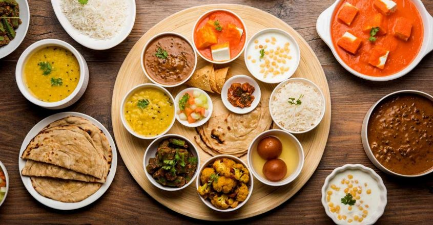
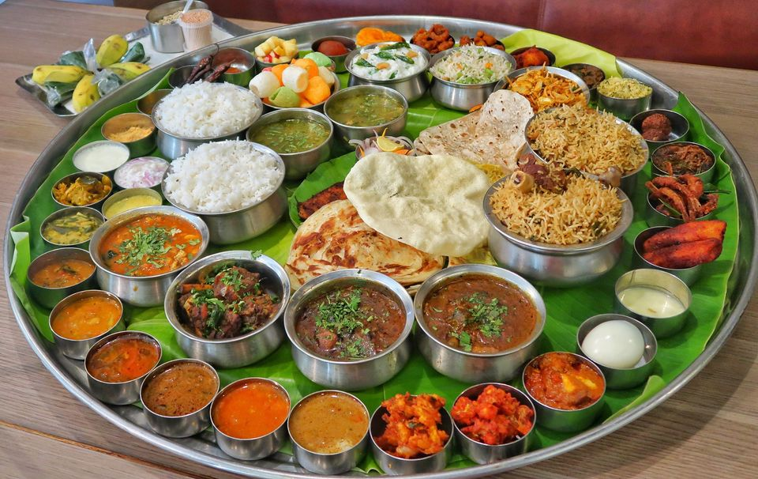
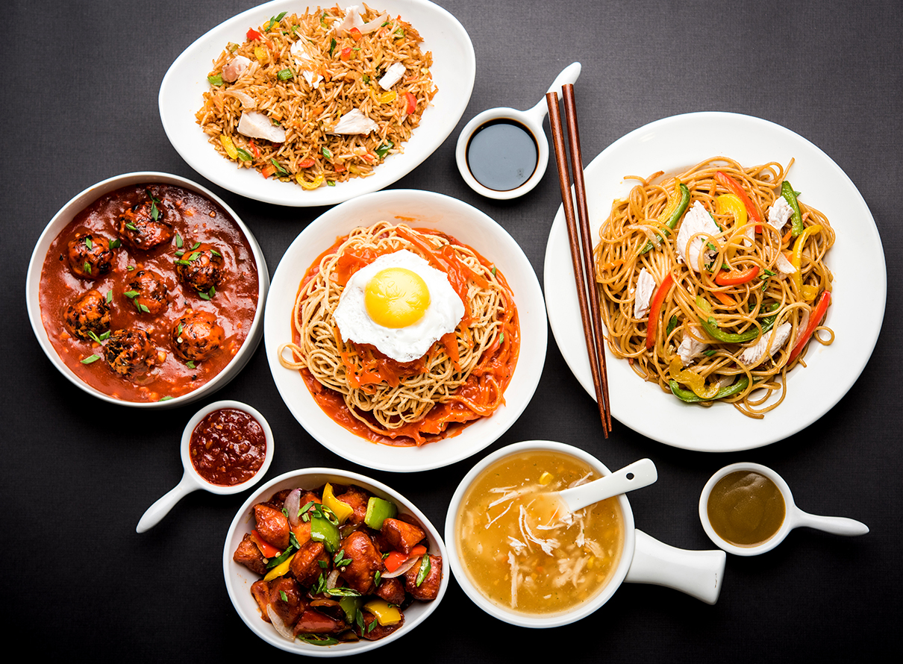

| Biryani | ||
|---|---|---|
 |
||
InformationBiryani is a popular rice dish that originated in the Indian subcontinent and is now enjoyed around the world. It is made with long-grain rice, meat (typically chicken, beef, or lamb), and a variety of spices, herbs, and vegetables. The exact origin of biryani is not clear, but it is believed to have originated in the Indian subcontinent and spread to other parts of the world through trade and migration. Biryani has evolved over time, and different regions have developed their own unique styles and variations. The basic recipe for biryani involves cooking rice and meat separately and then combining them with a blend of spices, such as cumin, coriander, turmeric, and garam masala. Vegetables like onions, tomatoes, and potatoes may also be added to the dish. The biryani is then baked or steamed, allowing the flavors to blend together. Biryani is often served with raita, a yogurt-based condiment, and a side of pickles. It is a popular dish for special occasions and celebrations, as well as everyday meals. There are many different types of biryani, each with its own unique flavor and style. For example, Hyderabadi biryani is a popular variation from the southern Indian city of Hyderabad, and is known for its spicy flavor and use of saffron. Lucknowi biryani from the northern Indian city of Lucknow is known for its delicate flavor and use of aromatic spices. Overall, biryani is a delicious and flavorful dish that has become a staple of Indian and Pakistani cuisine, and is now enjoyed by people all over the world. |
Ingredients:
|
Instructions:Rinse the rice thoroughly and soak it in water for 30 minutes. Heat the oil and ghee in a large pot over medium heat. Add the sliced onion and sauté until golden brown. Add the chicken and cook until browned on all sides. Add ginger-garlic paste, cumin seeds, coriander seeds, turmeric powder, garam masala, red chili powder, and salt. Stir and cook for a few minutes. Add the chopped tomatoes, green chilies, and plain yogurt. Mix well and let it cook for 5-10 minutes until the chicken is fully cooked. In a separate pot, bring 4 cups of water to boil. Drain the soaked rice and add it to the boiling water along with some salt. Let it cook until the rice is 70% done. Strain the rice and layer it on top of the chicken mixture in the pot. Sprinkle some chopped cilantro and mint leaves on top of the rice. Cover the pot with a tight-fitting lid and let it cook on low heat for 15-20 minutes until the rice is fully cooked and fluffy. Serve hot with raita, pickles, or any side of your choice. Enjoy your homemade chicken biryani!
|
Variety Of Country Foods
| Narth_Indian | South_Indian | Chinese | American |
|---|---|---|---|
|  |  |  |  |
|
The earliest records of North Indian cuisine date back to the Vedic period (1500 BCE – 500 BCE), where food was considered a sacred offering to the gods. The Vedic texts mention a variety of foods such as rice, lentils, barley, and vegetables. The Mauryan Empire (322 BCE – 185 BCE) saw the introduction of spices like cumin, coriander, and turmeric, which were used in Ayurvedic medicine. During the medieval period, North India saw the rise of the Mughal Empire (1526 – 1857), which brought with it a rich culinary tradition. Mughlai cuisine, which is characterized by the use of rich spices, nuts, and dairy products, originated in the royal kitchens of the Mughal emperors. Some of the iconic dishes of Mughlai cuisine include biryani, kebabs, and butter chicken. In addition to the Mughals, North India also saw the influence of the British, who introduced new ingredients and cooking techniques. The British influence can be seen in dishes such as chicken tikka masala, which is said to have originated in the UK. Today, North Indian cuisine is a fusion of different culinary traditions and has a wide variety of dishes that cater to different tastes and preferences. Some of the popular North Indian dishes include dal makhani, chole bhature, paneer tikka, and tandoori chicken. |
South Indian cuisine is known for its vibrant flavors, spicy curries, and the use of rice and lentils in various forms. The cuisine of South India has a long and rich history, with influences from various regions and cultures. The early history of South Indian cuisine dates back to the Indus Valley Civilization (3300 BCE – 1300 BCE), where rice, lentils, and millet were staple foods. The Chola Dynasty (300 BCE – 1279 CE) played a significant role in shaping the cuisine of South India by introducing new ingredients like coconut and tamarind. During the medieval period, the Vijayanagara Empire (1336 – 1646 CE) brought a fusion of different culinary traditions from different parts of India, resulting in the creation of new and unique dishes. The Maratha Empire (1674 – 1818 CE) also contributed to the cuisine of South India by introducing new ingredients like eggplants, tomatoes, and potatoes. South Indian cuisine is known for its extensive use of rice and lentils, which are used to prepare a variety of dishes such as dosa, idli, and vada. These dishes are typically served with sambar, a lentil-based vegetable stew, and chutneys made with coconut, tomato, or mint. |
Chinese cuisine is one of the world's most popular and diverse culinary traditions, with a long and rich history that spans thousands of years. Chinese food is known for its bold flavors, intricate cooking techniques, and wide variety of dishes. The early history of Chinese cuisine can be traced back to the Zhou Dynasty (1046 BCE – 256 BCE), where rice, millet, and wheat were staple foods. The Qin Dynasty (221 BCE – 206 BCE) saw the introduction of new ingredients such as soybeans, which led to the development of new dishes like tofu and soy sauce. During the Tang Dynasty (618 CE – 907 CE), Chinese cuisine flourished, and new cooking techniques such as stir-frying and deep-frying were introduced. The Song Dynasty (960 CE – 1279 CE) saw the emergence of regional cuisines, with dishes like dim sum and hot pot becoming popular in the southern regions of China. Today, Chinese cuisine is divided into eight distinct regional cuisines, each with its own unique flavors and cooking styles. Some of the most popular Chinese dishes include Kung Pao chicken, dumplings, fried rice, and hot and sour soup. |
American cuisine is a melting pot of different culinary traditions from around the world. Due to its history of immigration and diversity, American food has been influenced by a wide variety of cultures, including Native American, African, European, and Asian. In the 20th century, American cuisine became increasingly influenced by fast food, with the rise of chain restaurants like McDonald's, Burger King, and KFC. Fast food became a symbol of American culture and has spread to other parts of the world. Today, American cuisine is a diverse mix of regional cuisines, including Southern, Tex-Mex, Creole, and Californian. Some of the iconic American dishes include hamburgers, hot dogs, apple pie, fried chicken, barbecue ribs, and macaroni and cheese. American cuisine makes use of a wide variety of ingredients, including beef, chicken, pork, potatoes, corn, and tomatoes. It also incorporates many international flavors, including Italian, Mexican, and Asian. |